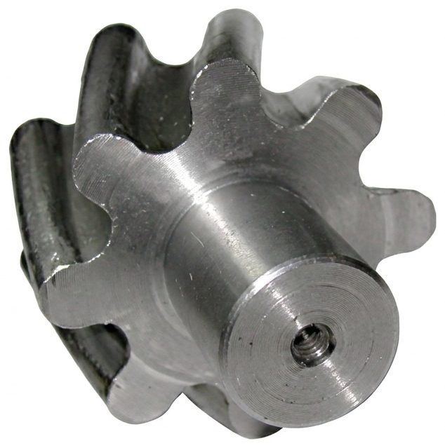
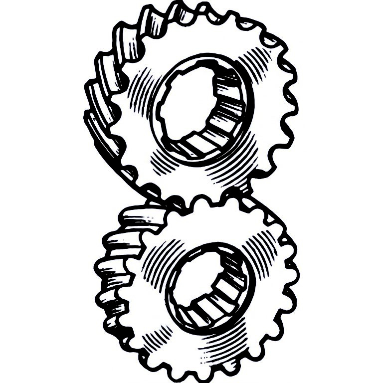

Позвонить: (4842) 75-75-05
Написать сообщение: m-40@inbox.ru
- Главная
- О компании
- Контакты
- Редукторы и мотор-редукторы
- Колеса крановые
- Блоки полиспаста
- Шкивы тормозные
- Муфты
- Крюки и крюковые подвески
- Грузовые барабаны
- Шлицевые детали
- Конические шестерни
- Цилиндрические шестерни
- Запасные части для козловых кранов
- Запасные части для портальных кранов
- Запасные части для башенных кранов
- Техническая информация
- Правовая информация
Цилиндрические шестерни → Передачи с зацеплением Новикова
- Главная
- О компании
- Контакты
- Редукторы и мотор-редукторы
- Колеса крановые
- Блоки полиспаста
- Шкивы тормозные
- Муфты
- Крюки и крюковые подвески
- Грузовые барабаны
- Конические шестерни
- Цилиндрические шестерни
- Шлицевые детали
- Запасные части для козловых кранов
- Запасные части для портальных кранов
- Запасные части для башенных кранов
- Техническая информация
- Правовая информация

ЗАО «НПО «Механик» изготавливает цилиндрические шестерни с зацеплением Новикова со следующими характеристиками:
- Класс точности - до 6 включительно;
- Модуль - до 30 включительно;
- Диаметр - до 3 500 мм включительно.
Изготавливаем цилиндрические шестерни с зацеплением Новикова в штучном и серийном производстве. Возможно изготовление по образцам и эскизам заказчика. Индивидуальный подход.

С целью повышения несущей способности зубчатых передач в 1954 г. Михаил Леонтьевич Новиков предложил принципиально новое зацепление, в котором профиль зуба очерчен дугами окружностей. Это зацепление возможно лишь при косых зубьях.Передача на основе колёс с круговыми зубьями (Передача Новикова) имеет ещё более высокие ходовые качества, чем косозубая - высокую нагрузочную способность зацепления, высокую плавность и бесшумность работы. Однако Передача Новикова ограничена в применении сниженными, при тех же условиях, КПД и ресурсом работы (такие колёса заметно сложнее в производстве). Линия зубьев у них представляет собой окружность радиуса, подбираемого под определённые требования. Контакт поверхностей зубьев происходит в одной точке на линии зацепления, расположенной параллельно осям колёс.
В зацеплении Новикова линейный контакт заменен точечным, который после непродолжительной приработки зубьев превращается в локальный контакт по поверхности. При этом профили зубьев в торцевом сечении могут быть не взаимоогибаемыми кривыми и их можно выполнять как выпуклый и вогнутый профили с малой разностью кривизны.
В передаче с параллельными осями линия зацепления является прямой линией параллельной осям колес.
Преимущества зубчатых передач с зацеплением Новикова:
- Повышенная контактная прочность зубьев за счет использования зацепления вогнутого профиля с выпуклым;
- Перекрытие в передачах Новикова обеспечивается только за счет осевого перекрытия, поэтому высота зубьев может быть достаточно малой, что обеспечивает
высокую изгибную прочность зубьев (в целом, по приблизительным оценкам, нагрузочная способность передач Новикова в 1,5 - 2 раза выше, чем косозубых
эвольвентных передач с одинаковыми размерами);
- Точечное зацепление (пятиподвижная кинематическая пара) обеспечивает в передачах с зацеплением Новикова меньшую чувствительность к монтажным
погрешностям.
Недостатки зубчатых передач с зацеплением Новикова:
- Более сложная технология изготовления, за счет использования инструмента с профилями криволинейной конфигурации;
- Наличие значительных осевых нагрузок на подшипники из-за использования винтовых зубьев с большими углами подъема
винтовой линии;
- Склонность зубьев винтовых колес к излому у торца при входе в зацепление.
Зацепление Новикова получило преимущественное применение в машиностроении, проектирование тяжёлых тихоходных машин, таких как трактора и танки, в авиационной
промышленности. Известны примеры использования передач Новикова в ответственных редукторах приводов вертолетов как отечественных (например, КА-126), так и зарубежных.
Главным конкурентным преимуществом новиковского зацепления является значительно более высокая нагрузочная способность.
Если твердость рабочей поверхности зубьев не превышает НВ 350, то, при прочих равных параметрах передача Новикова обеспечивает прием нагрузки, примерно в 2,5
раза превышающей допускаемую для эвольвентной передачи. Благодаря этому, при равной передаваемой мощности передача Новикова имеет практически в 2 раза меньшие габариты.
Профили зубьев в зацеплении Новикова позволяют применять более высокие передаточные числа, а отлично удерживающаяся между контактирующими элементами смазочная
пленка увеличивает срок службы зубьев и повышает КПД передачи (потери на трение в новиковском зацеплении примерно в 2 раза ниже, чем в передачах с эвольвентный
профилем зубьев).
Благодаря точечному контакту зубьев передача Новикова не столь чувствительна к погрешностям при монтаже и перекосам.
Разработанный Новиковым оригинальный вариант сопряжения поверхностей зубьев стал настоящим прорывом в области машиностроения. Ранее считалось, что, если передача
имеет параллельные оси, то плоскости зубьев должны находиться в постоянном линейном контакте, а торцевые профили зубчатых пар при этом представлять собой
взаимоогибаемые кривые.
Идея Новикова заключалась в том, чтобы заменить линейный контакт поверхностей зубьев точечным. Соответственно, такой подход позволил изменить и вид профилей
зубьев, наблюдаемый в торцевом сечении: вместо взаимоогибаемых кривых Новиков использовал зубья, очерченные окружностями радиусов, имеющими минимальную разность
кривизны. Один из профилей при этом обычно выполняют выпуклым, а второй, соответственно, вогнутым.
Совмещение подобных профилей зубьев позволяет добиться того, что площадка их контакта смещается в процессе работы вдоль профиля, а не располагается
непосредственно по всей его линии. При этом неизменными остаются как скорость перемещения, так создаваемый угол давления.
Для зацепления Новикова характерно то, что оно обладает нулевым торцовым коэффициентом перекрытия, в связи с чем его работоспособность может обеспечить лишь
косое или шевронное исполнение зубьев.
Первоначально Новиковым был создан вид зацепления лишь с одной линией зацепления, который, в зависимости от того, где в какой из точек происходил контакт,
мог быть либо «дополюсным», либо «заполюсным». Однако наилучшими эксплуатационными характеристиками (большей нагрузочной способностью и технологичностью,
меньшей шумностью и чувствительностью к осевым смещениям) обладает созданная впоследствии передача, имеющая две линии зацепления (дозаполюсное зацепление).
В этом варианте ножки каждого из колес выполнены вогнутыми, а головки - выпуклыми. Помимо преимуществ в эксплуатации, достоинство дозаполюсного зацепления
в том, что нарезку зубьев на шестерне и колесе возможно осуществлять одним инструментом. Это упрощает технологию работ и повышает их точность.
По вопросам изготовления цилиндрических шестерен с зацеплением Новикова обращайтесь в отдел продаж по телефону:
(4842) 75-75-05
- Более сложная технология изготовления, за счет использования инструмента с профилями криволинейной конфигурации;
- Наличие значительных осевых нагрузок на подшипники из-за использования винтовых зубьев с большими углами подъема винтовой линии;
- Склонность зубьев винтовых колес к излому у торца при входе в зацепление.
Зацепление Новикова получило преимущественное применение в машиностроении, проектирование тяжёлых тихоходных машин, таких как трактора и танки, в авиационной промышленности. Известны примеры использования передач Новикова в ответственных редукторах приводов вертолетов как отечественных (например, КА-126), так и зарубежных.
Главным конкурентным преимуществом новиковского зацепления является значительно более высокая нагрузочная способность. Если твердость рабочей поверхности зубьев не превышает НВ 350, то, при прочих равных параметрах передача Новикова обеспечивает прием нагрузки, примерно в 2,5 раза превышающей допускаемую для эвольвентной передачи. Благодаря этому, при равной передаваемой мощности передача Новикова имеет практически в 2 раза меньшие габариты.
Профили зубьев в зацеплении Новикова позволяют применять более высокие передаточные числа, а отлично удерживающаяся между контактирующими элементами смазочная пленка увеличивает срок службы зубьев и повышает КПД передачи (потери на трение в новиковском зацеплении примерно в 2 раза ниже, чем в передачах с эвольвентный профилем зубьев).
Благодаря точечному контакту зубьев передача Новикова не столь чувствительна к погрешностям при монтаже и перекосам. Разработанный Новиковым оригинальный вариант сопряжения поверхностей зубьев стал настоящим прорывом в области машиностроения. Ранее считалось, что, если передача имеет параллельные оси, то плоскости зубьев должны находиться в постоянном линейном контакте, а торцевые профили зубчатых пар при этом представлять собой взаимоогибаемые кривые.
Идея Новикова заключалась в том, чтобы заменить линейный контакт поверхностей зубьев точечным. Соответственно, такой подход позволил изменить и вид профилей зубьев, наблюдаемый в торцевом сечении: вместо взаимоогибаемых кривых Новиков использовал зубья, очерченные окружностями радиусов, имеющими минимальную разность кривизны. Один из профилей при этом обычно выполняют выпуклым, а второй, соответственно, вогнутым.
Совмещение подобных профилей зубьев позволяет добиться того, что площадка их контакта смещается в процессе работы вдоль профиля, а не располагается непосредственно по всей его линии. При этом неизменными остаются как скорость перемещения, так создаваемый угол давления.
Для зацепления Новикова характерно то, что оно обладает нулевым торцовым коэффициентом перекрытия, в связи с чем его работоспособность может обеспечить лишь косое или шевронное исполнение зубьев.
Первоначально Новиковым был создан вид зацепления лишь с одной линией зацепления, который, в зависимости от того, где в какой из точек происходил контакт, мог быть либо «дополюсным», либо «заполюсным». Однако наилучшими эксплуатационными характеристиками (большей нагрузочной способностью и технологичностью, меньшей шумностью и чувствительностью к осевым смещениям) обладает созданная впоследствии передача, имеющая две линии зацепления (дозаполюсное зацепление).
В этом варианте ножки каждого из колес выполнены вогнутыми, а головки - выпуклыми. Помимо преимуществ в эксплуатации, достоинство дозаполюсного зацепления в том, что нарезку зубьев на шестерне и колесе возможно осуществлять одним инструментом. Это упрощает технологию работ и повышает их точность.
По вопросам изготовления цилиндрических шестерен с зацеплением Новикова обращайтесь в отдел продаж по телефону:
(4842) 75-75-05
КМЗ
Калужский механический завод
г. Калуга, ул. Дорожная, д. 40
Пн–Пт 8:00–17:00
Пн–Пт 8:00–17:00
© 2026 ООО «Калужский механический завод»
ИНН 4028052180 · КПП 402801001